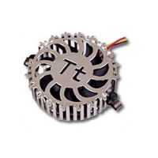
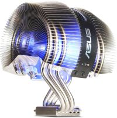

Кулер (англ. cooler — охладитель) совокупность радиатора и вентилятора, устанавливаемого на электронные компоненты компьютера с повышенным тепловыделением. Самая главная задача устройства - снижение температуры охлаждаемого объекта и поддержание ее на определенном уровне. Достигается это за счет непрерывного потока воздуха, обдувающего радиатор. То есть менее эффективный процесс излучения превращается в более эффективный - конвекцию. Кулеры - это самый простой, самый быстрый, доступный и, в большинстве случаев, достаточный способ охлаждения компонентов компьютера - воздухом охлаждается все. Вариантов исполнения существует гигантское множество. Если говорить про внешний вид можно долго, то касательно функциональных отличий много не расскажешь.Кулеры бывают разных размеров – обычно от 40х40мм до 120х120мм.
Самой важной частью любого кулера является его вентилятор. Именно он шумит у Вас в Вашем системном блоке. А если быть более точным, то шум этот появляется при столкновении воздушного потока с радиатором. Особенно этот шум ощутим на дешевых моделях кулеров, т.к. над их дизайном никто не работает.
Вентилятор состоит из крыльчатки (в ней по внутреннему диаметру расположен магнит) и электромотора, который этот магнит вместе с крыльчаткой вращает. Через центр вентилятора идет осевой штырь, который размещается в центре мотора. Для большей плавности хода крыльчатки могут использоваться три вида подшипников (срок службы которых производители указывают в тысячах часов на упаковке):
Кстати, о сроке службы (сроке безотказной работы. Если срок службы указан в 40-50 тысяч часов (почти 5 лет. Хотя бывает и больше - до 300 000 часов!), это вовсе не значит, что вспомнить о кулере в следующий раз придется только через это время. Нет! Это число нужно делить на два-три, и все равно время от времени производить профилактические действия – протирать от пыли, продувать, смазывать. Если не ухаживать за кулером, он может начать шуметь, а если совсем про него забыть – то и остановиться. Производительность вентилятора (расходная характеристика) – пожалуй, основная его характеристика. Измеряется она в количестве кубических футов воздуха, перегоняемых им в минуту, сокращенно — CFM (Cubic Feet per Minute). Эта характеристика главным образом зависит от площади вентилятора, профиля лопастей и скорости их вращения. Чем больше это значение, тем выше эффективность охлаждения и, как правило, тем выше уровень шума, создаваемый вентилятором при работе.
Перегонять кубометры воздуха кулер может своими лопастями на скорости до 8000 оборотов в минуту (для сравнения, обычный легковой автомобиль выдает 5-8 тысяч оборотов. Болид «Формула-1» - до 24000 оборотов). Но понятное дело, что при такой скорости шум от работы кулера будет ощутимым. Поэтому предпочтительнее брать кулеры с термодатчиками – которые «анализируют» температуру и в зависимости от ситуации могут увеличивать или уменьшать количество оборотов. Чаще всего это положительно сказывается на шуме от работы. Все компьютерные кулеры питаются от постоянного тока, напряжение которого чаще всего составляет 12В. Для подключения к питанию они используют трех-контактные Molex-коннекторы (для Smart-вентиляторов) или четырёх-контактные PC-Plug-коннекторы.Разъём Molex состоит из трех проводов: чёрный (земля), красный (+) и жёлтый (сигнальный). PC-Plug имеет четыре провода: два чёрных (земля), жёлтый (+12В) и красный (+5В). Разъёмы Molex на материнских платах используются для того, чтобы система сама могла контролировать скорость вращения вентилятора, подавая на красный провод различное напряжение (обычно от 8 до 12 В). По жёлтому (сигнальному) проводу система узнает от кулера сведения о скорости вращения его лопастей. Использование Molex имеет один весомый недостаток: опасно цеплять вентиляторы с потребляемой мощностью более 6Вт.
Дело обстоит иначе с разъемом PC-Plug – он выдерживает десятки Ватт. Но и без дегтя не обошлось - при подключении к нему Вы не сможете узнать, работает Ваш вентилятор или нет. Найти переходник с одного разъема на другой сейчас не составляет никакого труда – они часто идут в комплекте. Так же для снижения шума кулер иногда переводят на 5В или 7В. Шлейфы округляют, провода заплетают в косички или обтягивают оплеткой и убирают в укромное местечко – чтобы не мешали продуманной воздушной циркуляции.
 Все кулеры классифицируются по уровню шума,
издаваемому от их работы на следующие классы (чем ниже уровень шума, тем
более комфортной будет работа за компьютером):
- Условно бесшумный
Уровень шума такой системы охлаждения составляет менее 24 дБ. Этот
показатель ниже типового фонового шума в тихой комнате (в вечернее или
ночное время суток). Таким образом, кулер не вносит практически никакого
существенного вклада в шумовую картину. Обычно это значение достигается
при минимальном числе оборотов вентилятора для систем с регулятором
скорости вращения.
- Малошумный
Уровень шума от
такой системы охлаждения лежит в пределах от 24 до 30 дБ включительно.
Кулер вносит еле ощущаемый вклад в акустику ПК.
- Эргономичный
Уровень шума такой системы охлаждения лежит в диапазоне от 37 до 42 дБ
включительно. Шум от такого кулера по всей вероятности будет заметен в
большинстве пользовательских конфигураций компьютера.
- Не эргономичный.
Уровень шума рассматриваемой системы охлаждения больше 42 дБ. В таких
условиях кулер будет являться основным «генератором» шума компьютера
практически любой конфигурации. Домашнее применение такого кулера
неоправданно – он больше подойдет для производственных и офисных
помещений с фоновым шумом более 45 дБ.
К плюсам кулеров относятся их распространенность, универсальность, доступность. Небольшую стоимость тоже можно отнести к плюсу, но стоит учитывать, что на хороший кулер жадничать не стоит – ведь это, по сути, второе сердце компьютера – нельзя, чтобы остановилось. К минусам я отнесу возможные шумы, которые рано или поздно появятся на любом кулере. Подводя итог вышесказанному. На данный момент кулер – самая распространенная система охлаждения, охладить которой можно что угодно – от процессора до винчестера и памяти. Вопрос заключается в выборе и подборе нужного кулера – ведь их существует великое множества от десятков производителей. Кому-то нужна золотая середина между тишиной и производительностью. Кому-то нужны гигагерцы и плевать на шум, кто-то наоборот, предпочитает тишину.